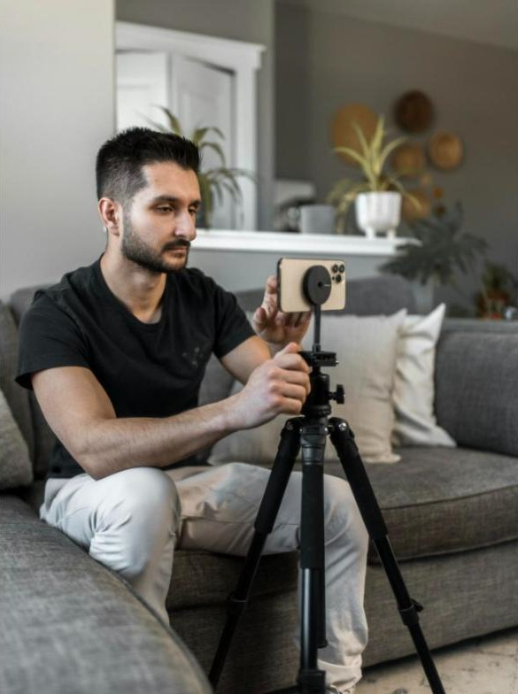
YouTubeur · Streamer
Devenir créateur
Construis ta communauté et vis de ton contenu. Avec Nil, SK, Loann et Mido.
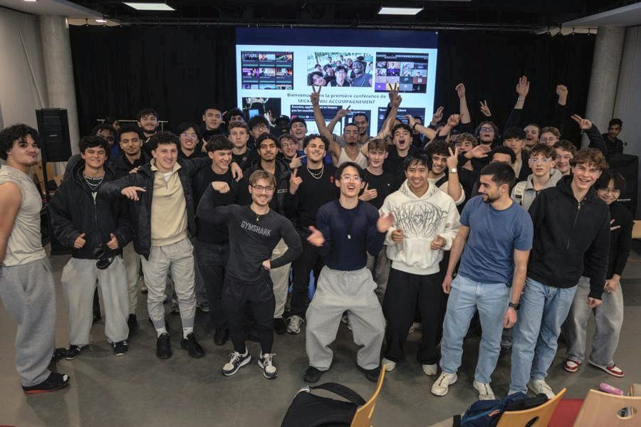
Viens rencontrer les créateurs de contenu en vrai, à Paris, et découvre comment vivre des réseaux sociaux.
Des YouTubeurs, des streamers et des entrepreneurs qui vivent d'internet. Ils te racontent comment.
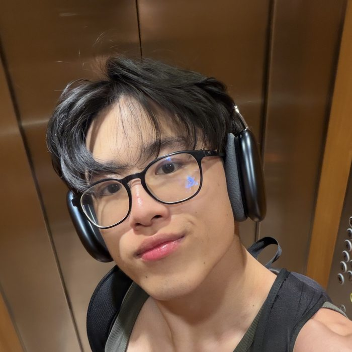
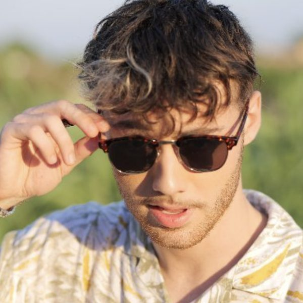
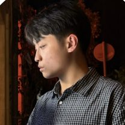
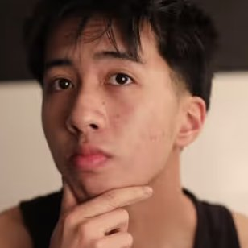
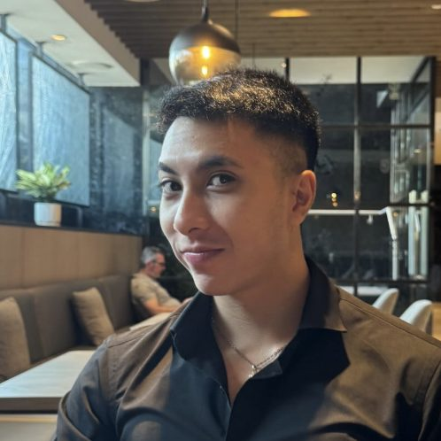
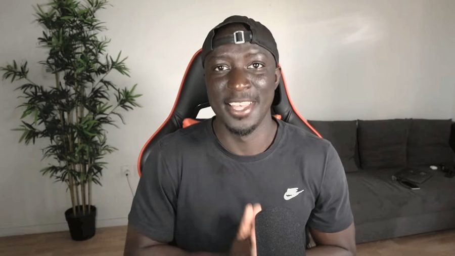
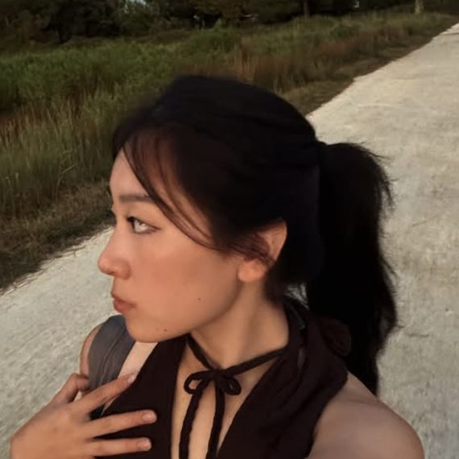
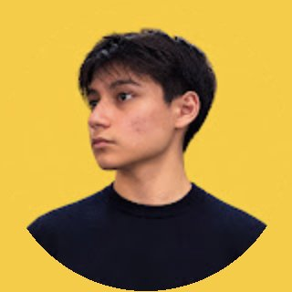
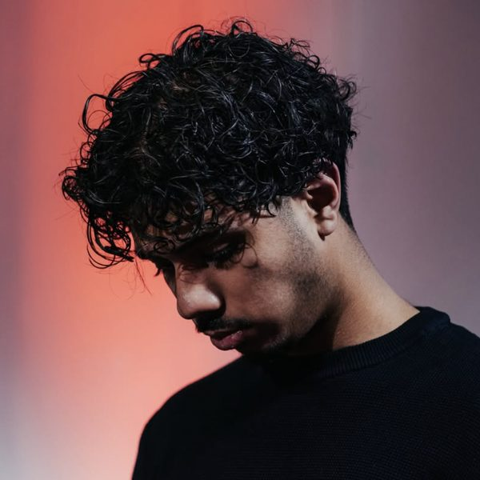
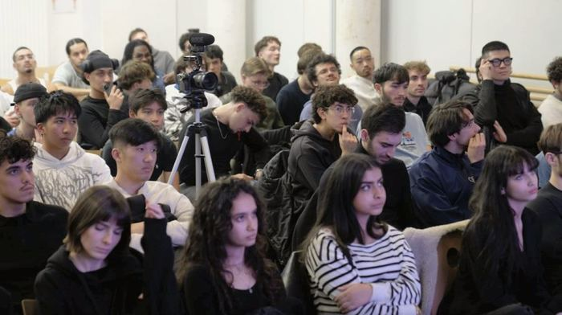
Trois pôles. Écoute-les tous, puis choisis celui qui te parle.

Construis ta communauté et vis de ton contenu. Avec Nil, SK, Loann et Mido.
Vends ton propre produit, ou ce que tu sais déjà faire. Avec Mickaël Wu, Calvin, MrDreamax, BobbySan et Sonia.
Crée du contenu pour des marques et gagne en expérience. Avec Adrien MD et Shahryar.
Un samedi après-midi, de 14h à 18h.
Tous les mentors du festival montent sur scène.
Dans chaque pôle, un ou deux mentors racontent leur histoire, présentent leur métier, donnent leurs conseils et te disent pour quel profil il est fait.
Chaque pôle dans sa salle. Une heure pour poser toutes tes questions à ceux qui en vivent.
Rencontre les créateurs, les mentors et les autres jeunes qui veulent se lancer.
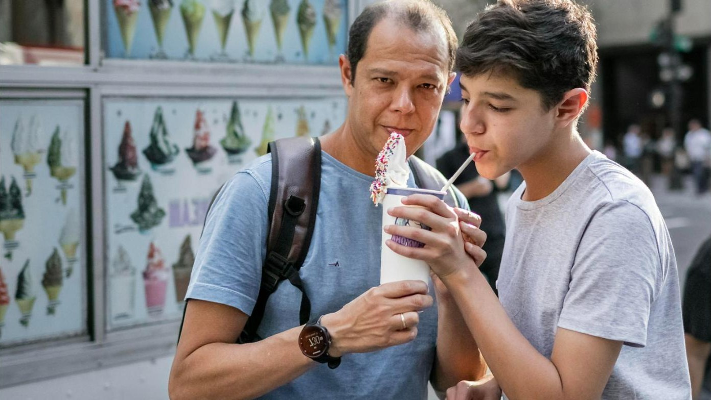
Tes parents se demandent si internet peut vraiment devenir un métier ? Amène-les, ils sont les bienvenus. Ils verront des jeunes qui en vivent, leurs mentors, et l'équipe de l'École AUDACE répondra à toutes leurs questions.
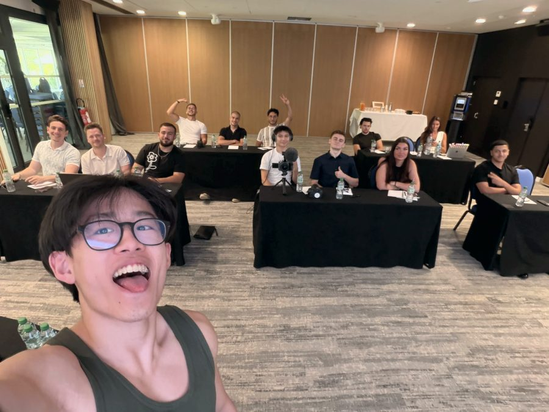
Fondée par Mickaël Wu, qui a lancé son premier business à 9 ans et quitté Paris-Dauphine pour vivre d'internet. Plus de 1 400 élèves accompagnés sur YouTube, Instagram et TikTok.
« Je donne aux jeunes ce que j'aurais aimé avoir. »
Oui. L'entrée est gratuite, il suffit de s'inscrire. Les places sont limitées.
Oui, et on te le conseille. Un espace leur est réservé pour poser toutes leurs questions à l'équipe de l'École AUDACE.
Non. Le festival est fait pour découvrir les métiers d'internet, même si tu pars de zéro.
Un samedi après-midi, de 14h à 18h, à Paris. La date et le lieu exacts sont annoncés sur cette page et sur @ecoleaudace.
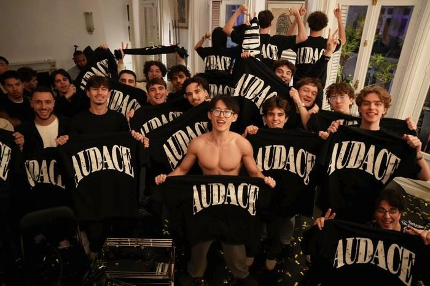
Places limitées. Les inscriptions ouvrent très bientôt. Laisse-nous un message sur WhatsApp et on te prévient en premier.
Me prévenir sur WhatsApp → WhatsApp : 06 95 73 96 69